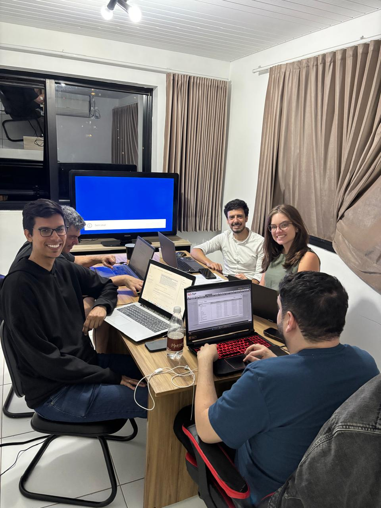
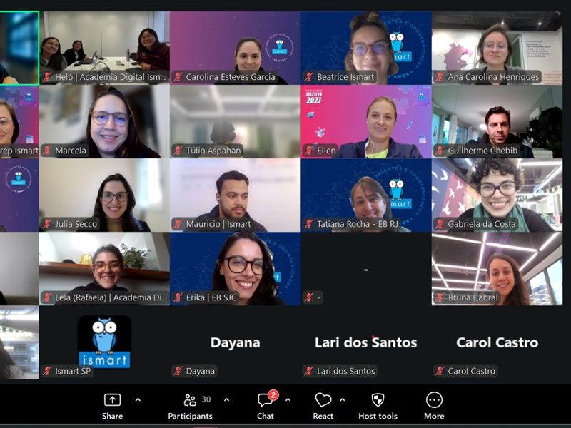
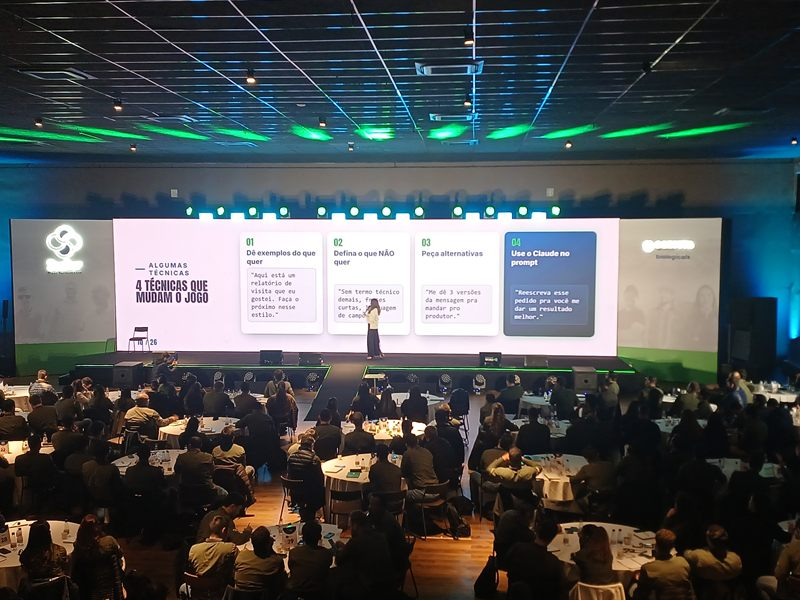
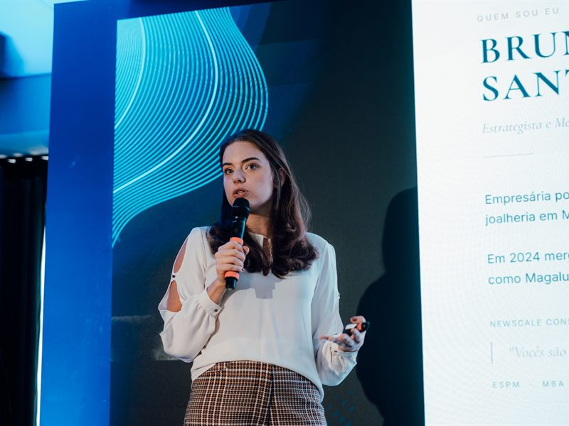

Juca na Balada
Agência de viagens: o PDF de pacote virou página interativa que monta a viagem e entrega o lead pronto no WhatsApp.
Um dia inteiro de imersão presencial no Clube Turismo, para que a busca diária por ofertas e a qualificação de leads deixem de ser manuais e passem a rodar com inteligência artificial. A pesquisa e o mapeamento acontecem antes. O dia é de construção, não de aula.
O cliente enxerga apenas o pacote pronto. O que ele não enxerga é a busca por uma boa tarifa aérea, feita fornecedor por fornecedor, nem o trabalho de transformar uma pergunta de preço em proposta formalizada. É nessa etapa invisível que as horas se perdem, e é exatamente nela que a inteligência artificial entra.
A pesquisa de nivelamento e o mapeamento dos processos acontecem antes, para que o dia não comece do zero.
Das 9h às 18h, no escritório de vocês. A parte expositiva é curta de propósito: o grosso do dia é construindo, com os sistemas de vocês abertos na tela.
A única parte expositiva. Não é aula de ferramenta: é entender o raciocínio da IA, porque quem entende isso automatiza qualquer processo depois, inclusive os que vão nascer em 2027.
Sento com cada um: a Adriana na busca e na montagem do pacote, o Carlos na qualificação e na proposta. O trabalho acontece em cima do caso real, não em exemplo de aula.
Foi o que você me disse, Carlos, e a proposta responde a isso de duas formas. Primeira: o dia é execução assistida. Ninguém sai da sala com anotação, sai com automação rodando no próprio computador. Segunda: o que exige desenvolvedor de verdade, como agente de WhatsApp e integração via API com os sistemas da agência, não fica pendurado em ninguém. Sai do dia mapeado e vira orçamento separado, feito pelo time de desenvolvimento.
Nada aqui é slide de aula. É o que existe no computador de vocês às 18h, e o que continua existindo depois.
O que a gente construiu junto, salvo no Claude de vocês e testado com fornecedor e cliente reais.
Uma para cada um: os prompts e o passo a passo do que foi construído, prontos para repetir sem depender de ninguém.
O Claude estruturado com os seus fornecedores, os perfis de cliente e os critérios de curadoria de vocês.
As duas frentes destrinchadas no papel: o que ficou automatizado, o que ficou para o dev e o que ficou para depois.
Mais de 6 horas gravadas, acesso incluso. Para rever no ritmo de cada um e destravar o que não coube no dia.
A que eu mostrei na conversa. Ela não copia o meu conteúdo: ela monta um motor com a cara do Clube Turismo, passo a passo, e vem com o curso de como implementar. É a peça que o estagiário de marketing usa no dia seguinte.
Um canal direto comigo para as dúvidas que aparecem depois, quando cada um começa a aplicar sozinho no dia a dia.
Algumas ideias do que podemos construir em nosso encontro. Não é um escopo fechado, são possibilidades!
Uma rotina agendada que roda sozinha toda manhã: entra nos canais e nos fornecedores, inclusive os que exigem login, varre as condições de aéreo e devolve só o que passa no filtro de vocês, com o resumo pronto para o grupo do WhatsApp.
Sai fazendo: a busca chega pronta, você decideA pergunta de preço deixa de começar do zero. O Claude organiza o que o cliente pediu, faz as perguntas que faltam, cruza com o que vocês vendem e devolve o briefing qualificado com um esboço de proposta, para entrar na conversa já sabendo se vale o tempo.
Sai fazendo: esforço proporcional ao leadNo lugar do sistema atual e do texto montado à mão, uma página com a identidade do Clube Turismo, na qual o próprio cliente escolhe datas, hotel e opcionais e chega ao WhatsApp da agência com tudo preenchido. É exatamente o que fizemos na Juca na Balada.
Sai fazendo: a proposta se monta sozinhaE é a mesma peça que serve para os grupos de viagem de 2027: a landing da Itália com cruzeiro no Mediterrâneo, com um agente respondendo o básico e entregando o lead já classificado. Nenhuma dessas ideias é obrigatória. O valor está em aprender a enxergar as próximas.
Achar a boa oportunidade de aéreo do dia e transformar num pacote que mereça ir pro grupo.
Entrar num fornecedor, sair, entrar no outro, cada um com login próprio. Achar o aéreo, avaliar o hotel pela nota, pela localização e pelo perfil de quem vai viajar, montar a proposta no sistema, escrever o texto de divulgação e publicar no grupo.
A varredura já aconteceu quando você senta. Chega a lista filtrada pelos critérios de vocês, "o que é bom a gente vende, o que é ruim não", e o que sobra para você é o julgamento de turismo, que é justamente a parte que só vocês têm.
Exemplo ilustrativo, do que vocês contaram na conversa. Quanto dá para puxar por dentro de cada fornecedor depende de ele ter API ou não. Isso entra na pesquisa e no mapeamento prévios, antes do dia, e a resposta chega pronta.
Empresas de tamanhos e setores diferentes, de negócios familiares tocados pelos próprios donos a convenções com centenas de pessoas. Entre elas, agências de viagens.

Agência de viagens: o PDF de pacote virou página interativa que monta a viagem e entrega o lead pronto no WhatsApp.

Empresa familiar, dois donos na operação: o fluxo de caixa que levava 2 dias passou a sair em minutos.

Imersão presencial sentando com cada área, área por área, até cada uma sair com a própria automação.

A Virada IA para o time inteiro, da diretoria a quem opera o balcão.

Imersão de IA com Claude para os 70 colaboradores do Ismart.

Mais de 280 pessoas: a IA que multiplica o que o time já sabe fazer.

Formação Claude com profundidade para 40 líderes, em três encontros.

A Virada IA para uma das maiores redes de odontologia do país.
Também passamos por COLO Saúde, Corteva, Casa Tacto, Belcenter, Proativa e Casa Kahla, entre outras operações que abriram os próprios processos para a gente.
Dono de empresa familiar falando do que mudou no dia a dia depois da formação. Dá o play.
É a diária de consultoria apresentada na conversa: pesquisa de nivelamento, mapeamento prévio da agência e o dia inteiro presencial. Não existe mensalidade.
As assinaturas do Claude vocês contratam direto (de R$ 110 a R$ 500 por mês, conforme o plano). No dia fica definido qual plano faz sentido para a agência. Se depois quiserem encontros avulsos de acompanhamento, são R$ 600 por encontro de 1h30, sem compromisso de recorrência.
O compromisso não termina com o fim da aula. O dia inteiro é prática guiada para que cada um consiga repetir sozinho. O curso, a skill e o grupo no WhatsApp existem porque a dúvida real aparece depois, quando a consultoria já não está na sala.
A preocupação é justa e foi levantada por você, Carlos. Por isso o dia não termina em ideia: termina em automação rodando no computador de vocês, testada com fornecedor e cliente reais. E por isso existem a pesquisa e o mapeamento prévios: o dia começa com o levantamento do que dá para puxar de cada sistema já pronto, em vez de descobrir isso com a hora correndo. Se ao fim do dia a única automação em funcionamento for a busca de ofertas da Adriana, o investimento já se paga em horas devolvidas.
As duas coisas existem aqui, e elas se dividem por natureza da tarefa. O que roda dentro do Claude, como a busca de ofertas, a qualificação, a página de proposta e o conteúdo, vocês constroem comigo em horas e mudam sozinhos quando quiserem, sem depender de ninguém. O que exige API, como o agente de WhatsApp, não se resolve na hora: fica com o time de desenvolvimento, sai do dia já mapeado e vira orçamento à parte. Começar pelo dia é justamente o que permite orçar esse desenvolvimento com escopo real, e não por estimativa.
Dá. Quando o fornecedor tem API, a gente puxa a informação por dentro. Quando não tem, a automação abre o navegador e faz o caminho que a Adriana faz hoje, logada, só que sozinha e sem cansar. O quanto cada um dos seus fornecedores permite é exatamente o que o mapeamento prévio levanta, e a resposta chega pronta no dia.
Para vocês dois, sim, e é por isso que a recomendação é começar só com os sócios. A pesquisa e o mapeamento acontecem antes, então o dia inteiro é prática. O objetivo não é esgotar todos os usos do Claude: é cada um sair com a própria rotina rodando e sabendo repetir. Se depois fizer sentido trazer a vendedora e o estagiário de marketing, a gente conversa sobre isso na hora certa.
É o encaixe mais direto de todos. A landing da Itália com cruzeiro no Mediterrâneo, o agente que responde o básico e devolve o lead já classificado para vocês entrarem só na hora certa: é o mesmo formato que já está em funcionamento na Juca na Balada. É possível começar a montar essa estrutura no próprio dia.
Não. A Bruna não vem da tecnologia: é empresária e implementa IA no próprio negócio todos os dias. A conversa é na língua da operação, não na do TI.
Formada em Marketing pela ESPM, empresária há mais de 10 anos. Fundou a Casa Kahla, joalheria com loja física e e-commerce, e foi ali que começou a usar IA para liberar tempo e dar conta de um negócio inteiro com um time pequeno. Hoje ajuda empresas a implementar IA e formar as equipes.
ESPM. 17+ anos em Marketing e Produto. Ex-Warner Bros., ex-Natura & Co. Já implantou agentes de IA em redes com 700+ franquias.
"Cada projeto começa pela conversa, não pelo contrato. A gente entende como a operação funciona hoje, o que a equipe precisa, e só depois constrói. E depois que entrega, a gente fica, evoluindo junto com o seu negócio."
Vocês confirmam e travamos a data. Os 50% reservam a agenda.
Os dois respondem a pesquisa de nivelamento e liberam acesso aos sistemas, para o mapeamento do que dá para automatizar em cada um.
Abertura curta e todo o restante em prática guiada. Cada um termina com a própria solução em funcionamento.
Curso e skill liberados, grupo no WhatsApp aberto, e o orçamento do que precisar de desenvolvimento, se fizer sentido.
Adriana e Carlos não ficam sozinhos no dia, nem depois dele.
Uma data reservada, um dia de construção, e a operação comercial passa a começar com a informação já pronta na mesa.